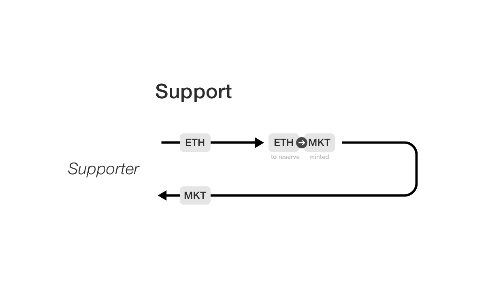
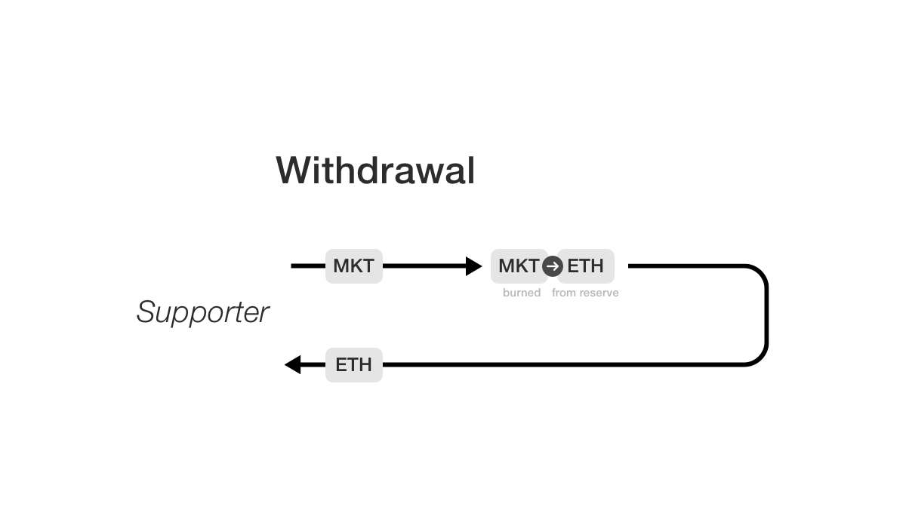
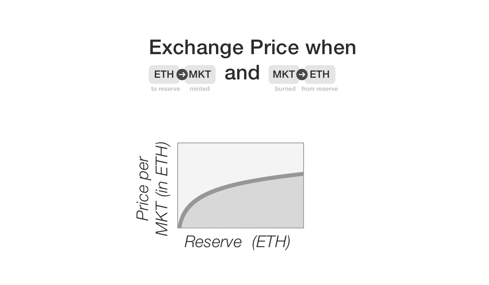

Reserve
You’ve learned so far about the basic mechanics of data
markets. The MarketToken tracking ownership, the
voting mechanism, the process for getting listings
accepted into the market. You now understand that a
maker submits a listing candidate on-chain (and sends
the data off-chain to the datatrust). If accepted, the
maker is rewarded listing_reward of MarketToken.
You might now be asking yourself, why would anyone
bother? This MarketToken is a new ERC-20 token that
no one has heard of. Why does it have any monetary
value?
The answer to this question is that the MarketToken
for a particular data market is backed by the Reserve
for that data market. You can think of the Reserve as
the “bank account” tied to each data market. It holds
the funds tied to that data market and serves as
incentive for makers to contribute the market. These
funds are denominated in EtherToken (which if you
recall, is 1-1 equivalent with ETH). Holders of
MarketToken are authorized to their fair share of
these funds, which means that MarketToken is directly
redeemable for ETH. Since ETH has real value (in $), it
means that MarketToken has real value, so long as the
Reserve isn’t empty.
You might now say, that’s all well and good, but why
would anyone bother putting any money into the reserve?
What’s in it for them? You got a clue in the last
chapter; when buyers purchase data, a fraction of the
payment is sent to the reserve. Think of this as the
fee that the data market takes for facilitating the
data transaction. This means the reserve holds a
fraction of earnings from the data in the data market.
As the data in a data market is used more and more, the
Reserve builds up funds, just like a company whose
product is widely purchased builds up funds in its bank
account.
It’s also important to emphasize that data purchases
aren’t the only way the Reserve can gain funds.
You’ll learn more about patron support in the next
section. The remainder of this chapter introduces the
basics of the reserve for a data market. In addition to
discussing patronage, it introduces the “algorithmic
price curve,” the market making mechanism which allows
stakeholders to buy or sell MarketToken at all time,
and discusses the smart contract code backing the
Reserve.
Patrons
Who is a patron? Following the dictionary definition, a patron is an individual with funds who wishes to support a worthy cause. For example, a rich patron of the arts may pay for artists to follow their dreams and make beautiful works of art. Although we don’t usually think of them this way, a venture capitalist could also be viewed as a type of patron, supporting the growth of companies they believe in (while hoping to make a healthy return of course). A patron may be driven by different motives, altruistic or economic, but the mechanics are the same in either case. A patron is an entity who transfers funds to other individuals to support their work.
Thanks to the algorithmic capabilities of smart
contract systems, we can formalize this transfer in
code. In particular, a patron is an entity who
transfers funds to the Reserve for a data market. Why
would the patron do this? In our case, it’s because the
patron receives an amount of newly minted MarketToken
in return for their contribution. Rather than being
overly descriptive, let’s just take a look at the
Reserve.support() function.
@public
def support(offer: wei_value):
"""
@notice Allow the purchase MarketToken with EtherToken priced according to the "buy-curve"
@param offer An amount of Ether Token in Wei
"""
price: wei_value = self.getSupportPrice()
assert offer >= price # you cannot buy less than one billionth of a market token
self.ether_token.transferFrom(msg.sender, self, offer)
minted: uint256 = (offer / price) * 1000000000 # NOTE the ONE_GWEI multiplier here as well
self.market_token.mint(minted) # TODO maybe implement `mintFor()`
self.market_token.transfer(msg.sender, minted)
log.Supported(msg.sender, offer, minted)
Here offer is the amount of funds the patron is
offering to the data market. The function computes the
number of MarketToken that should be minted for this
offering by by consulting the “algorithmic price curve”
to obtain the current exchange rate (more on this
shortly). Note that offer is in units of
EtherToken wei. The returned value will be in terms
of MarketToken wei. offer is added to the data
market reserve and the returned MarketToken is newly
minted.
Let’s take a look at a diagram that illustrates the core idea:

You might ask, what about the reverse operation? What
if I supported a data market as a patron, but
something’s changed and I no longer have believe that
this market is worth my support. Is there any way for
me to recoup my funds? In the physical world, this
might have to involve lawyers and lawsuits, but in our
case, we can create algorithmic rules which allow for a
clean withdrawal. Let’s check out the
Reserve.withdraw() function:
@public
def withdraw():
"""
@notice Allows a supporter to exit the market. Burning any market token owned and
withdrawing their share of the reserve.
@dev Supporter, if owning a challenge, may want to wait until that is over (in case they win)
"""
withdrawn: wei_value = self.getWithdrawalProceeds(msg.sender)
assert withdrawn > 0
# before any transfer, burn their market tokens...
self.market_token.burnAll(msg.sender)
self.ether_token.transfer(msg.sender, withdrawn)
log.Withdrawn(msg.sender, withdrawn)
Reserve.withdraw() burns all the MarketTokens
associated with its caller and withdraws
their share of the reserve (the percent of reserve
withdrawn equals the percent of MarketToken this
stakeholder owns).
More precisely, the fractional ownership this
stakeholder has is num_tokens/total_num_tokens where
num_tokens is the number of MarketToken the
stakeholder owns, and total_num_tokens is the total
number of MarketToken out there. For example, if
num_tokens=5 and total_num_tokens=100, this would
be 5% fractional ownership. Then num_tokens market
tokens are burned. Then the fractional part of the
reserve belonging to this stakeholder is transferred to
them. In the case above, 5% of the reserve
would be transferred to the stakeholder’s address.
Here’s a diagram that captures the core flow:

There’s a really important point to make here. There’s
nothing in this function which checks that the caller
was a patron! In particular, makers or any stakeholders
in the market are permitted to call
Reserve.withdraw(). This brings a really powerful
feature to the data market. Any participant can choose
to exit the data market at any given time. This means
patrons can leave when they wish, and so can makers. In
addition, when leaving, they are allowed to leave with
their fair share of the Reserve, real EtherToken
which can be converted to ETH and subsequently to
dollars. This means a data market is a very liquid
entity since participants can opt-out at any time.
Algorithmic Price Curve
In the discussion in the previous section, we briefly
mentioned that patron calling Reserve.support() has
MarketToken minted according to the current exchange
rate. In the code, we invoked the function
Reserve.getSupportPrice() to obtain this price but
didn’t say much about its details. This function
implements what we call the “algorithmic price curve.”
It’s a way to get an algorithmically defined exchange
rate between MarketToken and EtherToken. This is an
extremely powerful tool, since it means that a data
market can bootstrap itself from 0. In systems without
an algorithmic price curve, an external party such as
an exchange has to dicate the conversion price. This
creates greater barriers to getting a new system off
the ground.
You might now be wondering how the algorithmic price
curve actually works. We’ve already given a few hints.
The Reserve.withdraw() function allows a stakeholder
to withdraw their fractional share of the reserve. If
they own something like 5% of all MarketToken for
that market, they are entitled to 5% of the reserves
EtherToken, which converts to ETH. This sets a direct
conversion from MarketToken to ETH, which sets a
minimum price for MarketToken, since it’s worth at
least that basic amount of ETH. Should we then have the
algorithmic price curve basically return this amount of
ETH?
This isn’t too far off from what the algorithmic price
curve does, but there’s a couple subtleties. First,
there’s initial condition issues. If the Reserve is
empty, say at the birth of the market, what is the
price of MarketToken? If it’s 0, that makes no sense
since it’s not clear how much patrons should be awarded
for their contribution. For this reason, there is a
price_floor parameter set by the Parameterizer,
which sets the minimum exchange rate.
There’s also one additional factor to consider. There’s
some danger in setting the price of MarketToken at
precisely its value in ETH. In particular, it makes it
easy for speculators to rapidly move in and out of the
market, which could destabilize the market. For this
reason, there’s a small “fee” which is added on. This
is governed by the spread parameter set by the
Parameterizer. This corresponds directly to the
spread
set by a traditional market maker. The spread is
awarded back into the reserve. For example, if spread
is 110, that means a 10% spread is enforced. This
creates a reward for early entrants, since they gain a
10% discount for being early to the game. This
encourages early participation in a market to help it
bootstrap.
Ok, we’ve said a lot of words, so let’s now take a look at the actual code:
@public
@constant
def getSupportPrice() -> wei_value:
"""
@notice Return the amount of Ether token (in wei) needed to purchase one billionth of a Market token
"""
price_floor: wei_value = self.parameterizer.getPriceFloor()
spread: uint256 = self.parameterizer.getSpread()
reserve: wei_value = self.ether_token.balanceOf(self)
total: wei_value = self.market_token.totalSupply()
if total < 1000000000000000000: # that is, is total supply less than one token in wei
return price_floor + ((spread * reserve * 1000000000) / (100 * 1000000000000000000))
else:
return price_floor + ((spread * reserve * 1000000000) / (100 * total)) # NOTE the multiplier ONE_GWEI
This is the most complex function in the entire Computable smart contract system. Before we dig into what the code means, it might help to take a look at this diagram to gain some basic understanding of the intuition:

Now let’s return to the algorithm. The main reason for this complexity is that today’s smart contract systems don’t support floating point. This means thata the basic math gets complicated. At heart, what we’re trying to implement is a linear function. Think of this as
price_floor + spread * withdrawal_price
The actual equations abbove are considerably more
complex. What gives? The first issue is units. Since we
don’t have floats, we have to perform computations in
wei (recall a wei is a billion-billionth, or
1/10**18). To make this work out,
Reserve.getSupportPrice() reports the amount of
EtherToken in wei needed to purchase a gwei (“giga
wei”, one-billionth, or 1/10**9) of a MarketToken.
Take a second and let your mind wrap around this.
The other complications here arise from the fact that we’re performing integer division. What is the “withdrawal price” in this case? Well, we’re purchasing a gwei of market token. How much from the reserve would that get us? Let’s pretend we had floating point:
reserve/MarketToken.totalSupply()
Ok, not bad. There’s an issue though. What are the
units of this expression? Well, reserve is in
EtherToken wei, and so is MarketToken wei. These
cancel. Our current expression is basically the amount
of of EtherToken in gwei you could withdraw for one
gwei of MarketToken. We need to multiply by 10**9
to get the amount in EtherToken wei. (Don’t worry if
this was confusing; getting unit math right is really
tricky. It took us a number of tries before we derived
the correct equation ourselves.)
(10**9 * reserve)/(MarketToken.totalSupply())
Let’s add on that price_floor. It’s just
an additional term we add on.
price_floor + (10**9 * reserve)/(MarketToken.totalSupply())
Getting a little closer. Let’s see if we can work that
spread in. A spread is a percentage (think 110 or
150 for 110% or 150%). For a spread of 110, we want
to multiply by 1.1. Or more generally, by
(spread/100). To deal with the lack of floats, we do
this:
price_floor + (spread * reserve * 10**9)/(100 * MarketToken.totalSupply())
Ok, this matches one of the equations in the code above. There’s one complication though. What if MarketToken.totalSupply() is 0? There would be a division by 0. We need some cutoff to prevent division by 0. For conceptual simplicity, we say that if MarketToken.totalSupply() is less than 1 whole MarketToken, we cap the size of the denominator to get the equation
price_floor + (spread * reserve * 10**9)/(100 * 10**18)
We’ve now succeeded in deriving the full form of the
algorithmic price curve! You might’ve gotten lost in
all this math. If so, don’t sweat it too much. The
basic intution is that the Reserve.support() price is
designed to be slightly above the Reserve.withdraw()
price at all times, with a small spread which is
awarded to the reserve. The rest of this is technical
detail.
The future of the Reserve
At present, the reserve is denominated in EtherToken.
This has the benefit of simplicity, but there are some
inconveniences. In particular, as the price of ETH
fluctuates, the value of the data market will
fluctuate. This isn’t necessarily sensible, since the
underlying market valueof the data shouldn’t be closely
tied to ETH market fluctuations. For this reason,
future versions of the protocol will likely enable ways
to construct markets whose reserves are denominated in
stablecoins.
However, this feature is not yet present in the current
version of the Computable protocol.
Last Thoughts
You’ve now begun to see the heart of the economic engine that drives on-chain behavior in the datatrust. But we haven’t yet tackled the off-chain system for actually handling data. You’ll learn more about the datatrust in the next chapter.
 Aug 22, 2019
Aug 22, 2019
 Edit this page
Edit this page